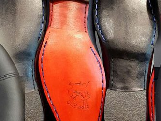
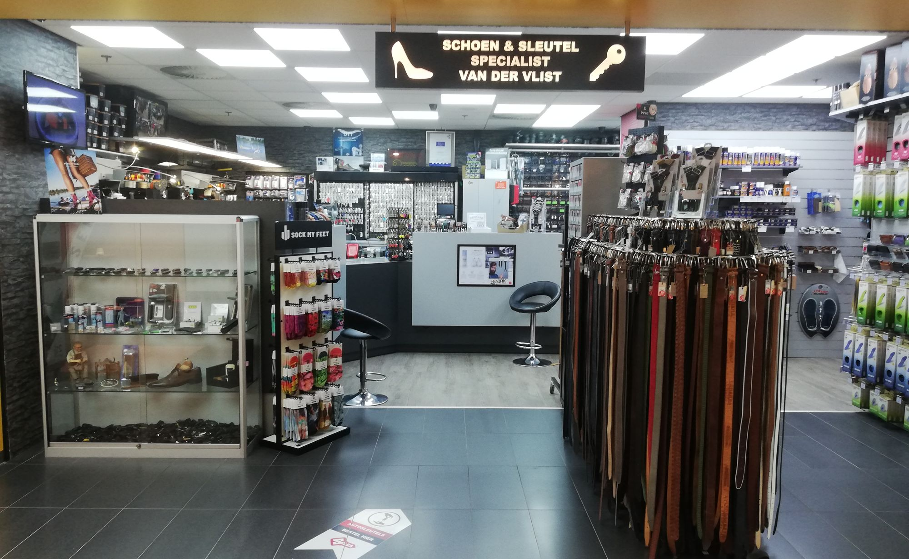
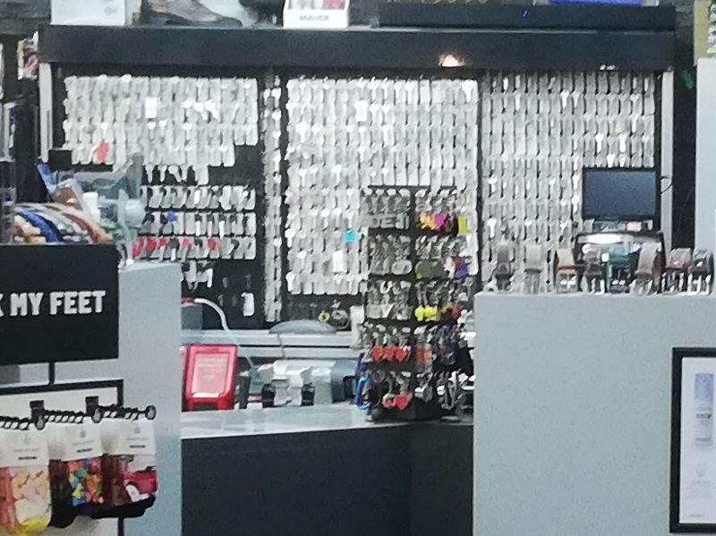
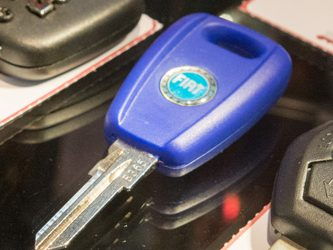
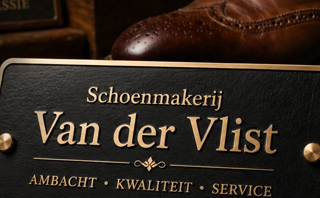
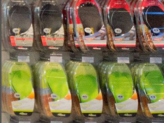
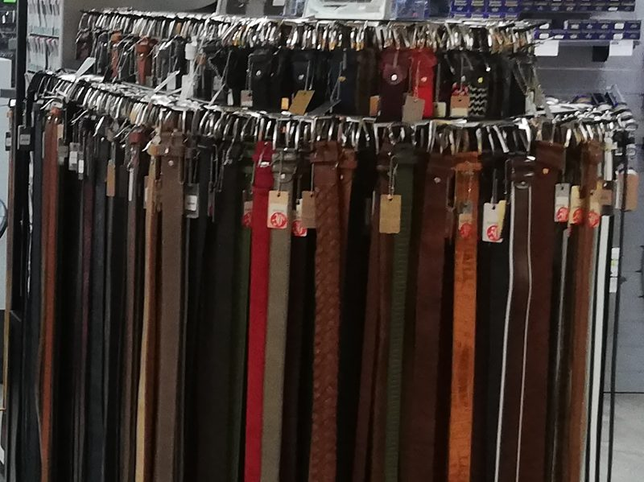
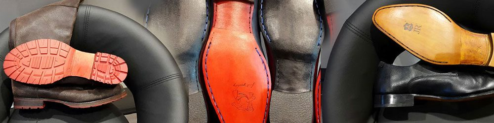
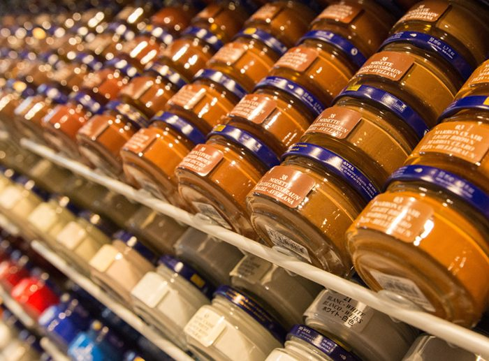

Schoenreparatie
Vakkundig herstel van schoenen en laarzen, ook orthopedische aanpassingen op doktersvoorschrift.
Ook orthopedischMeer info

Vakkundig schoenherstel, sleutels en autosleutels, naamborden, steunzolen en lederwaren. In Winkelcentrum Etten-Leur, naast de Blokker.
Schoenen, sleutels en meer, allemaal onder één dak. Klik voor meer informatie.

Vakkundig herstel van schoenen en laarzen, ook orthopedische aanpassingen op doktersvoorschrift.

Huis-, fiets- en brievenbussleutels, sleutels met certificaat en kopie op code.

Kopiëren en programmeren van transpondersleutels, voor auto's vanaf 1995.

Standaard of zelf samengesteld in kleur en maat, voor uw woning of bedrijf.

Mysole-zolen tegen overbelasting bij sport en werk. Preventief, voor gezonde voeten.

Portemonnees, etuis, pasjeshouders en een groot assortiment riemen. Plus veters en schoencrème.

Schoenreparatie is voor ons pure passie. We herstellen uw schoenen vakkundig en kunnen op doktersvoorschrift aanpassingen doen, zoals orthopedische verhogingen. Twijfelt u? Dan kijken we samen met u of uw schoenen de reparatie waard zijn.
"Repareren = besparen. Goed voor uw portemonnee én het milieu."

U vindt ons in Winkelcentrum Etten-Leur, naast de Blokker. Voor persoonlijk advies en het volledige assortiment.
Stuur een WhatsApp met een foto van uw schoen of sleutel, bel ons of stel uw vraag via het formulier.
Het snelst via WhatsApp of telefoon.